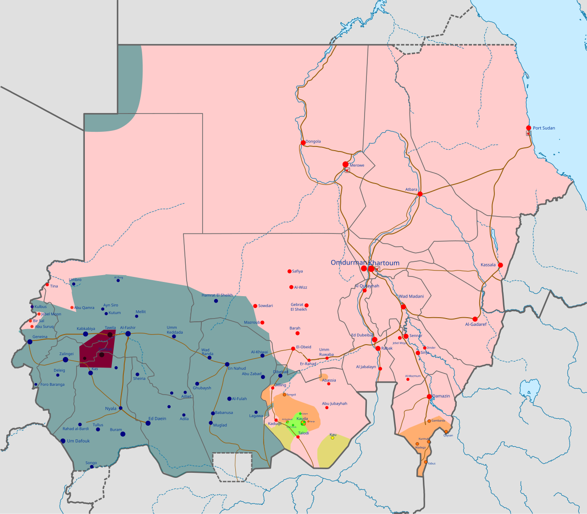
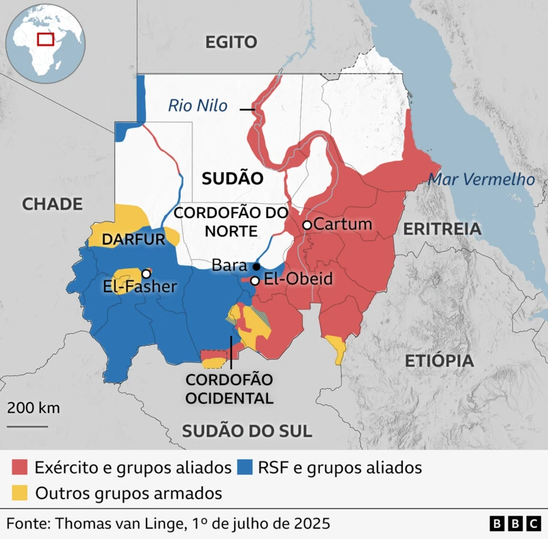
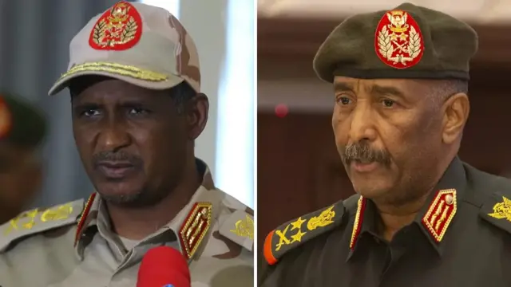
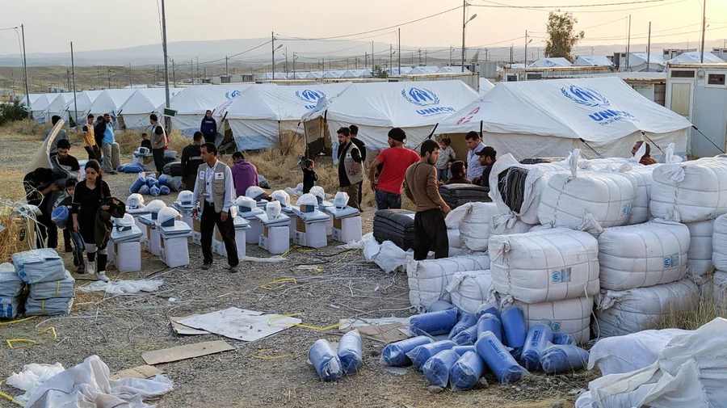

Grupo 4: Guerra Civil no Sudão
Clique em uma pergunta para ver o conteúdo.

Onde acontece o conflito

A atual Guerra do Sudão, iniciada em 2023 entre as Forças Armadas Sudanesas (SAF) e as paramilitares Forças de Apoio Rápido (RSF), acontece de forma generalizada nas regiões do país. A guerra hoje contempla as áreas de Cartum, a região central, Darfur, Kordofã e fronteiras com outros países (como a Etiópia e Abyei).
Como surgiu o conflito?

Raízes históricas
Desde 1956, o Sudão enfrenta sucessivos golpes militares, divisões étnicas e guerras civis que culminaram na separação do Sudão do Sul em 2011. Durante os 30 anos da ditadura de Omar al-Bashir, o governo armou milícias árabes chamadas Janjaweed para esmagar rebeliões em Darfur nos anos 2000. Com o tempo, essas milícias foram institucionalizadas nas atuais Forças de Apoio Rápido (RSF), acumulando imenso poder militar e econômico por meio do controle de minas de ouro.
Estopim
Em 2019, protestos populares levaram o chefe do Exército, Abdel Fattah al-Burhan, e o líder das RSF, Hemedti, a se unirem para depor al-Bashir, mas ambos deram um golpe conjunto em 2021 para impedir uma transição democrática civil. A aliança ruiu no início de 2023 devido a um impasse sobre o prazo e o comando para integrar os combatentes paramilitares das RSF ao exército regular. Como nenhum dos generais aceitou ficar subordinado ao outro, as RSF mobilizaram tropas sem autorização, deflagrando os combates em Cartum em 15 de abril de 2023.
Andamento da guerra
O confronto transformou-se em uma guerra de desgaste prolongada e fragmentou o país, com o Exército controlando o norte e o leste e as RSF dominando grande parte do oeste, incluindo Darfur. Alimentado pelo apoio de potências estrangeiras interessadas nos recursos naturais e na posição estratégica do Sudão, o conflito gerou a pior crise humanitária do mundo. Mais de 150 mil pessoas morreram, cerca de 14 milhões foram deslocadas e milhões enfrentam fome severa e graves violações de direitos humanos.
Quem participa da Guerra no Sudão?

A Guerra Civil no Sudão, iniciada em 15 de abril de 2023, é travada principalmente entre duas forças militares internas: ela opõe o exército sudanês, liderado pelo general Abdel Fattah al-Burhan, contra as Forças de Apoio Rápido (RSF), um grupo paramilitar liderado pelo general Mohamed Hamdan Dagalo. Após o início dos combates, a guerra atraiu inúmeras milícias locais e a interferência de potências estrangeiras.
Pesquisadores da ONU, legisladores dos EUA e o exército sudanês afirmam que os Emirados Árabes Unidos forneceram apoio crítico às RSF através de vizinhos do Sudão. Já o exército sudanês conta com o apoio de outras potências regionais, incluindo Egito, Turquia, Arábia Saudita e Catar.

Aliados
Exército Sudanês (SAF)
- Egito: Busca proteger suas fronteiras, conter refugiados e garantir apoio na disputa pelas águas do Rio Nilo.
- Arábia Saudita: Quer manter a estabilidade nas rotas comerciais do Mar Vermelho.
- Irã: Fornece armas para tentar instalar uma base naval no Mar Vermelho.
- Turquia e Catar: Visam expandir sua influência diplomática, comercial e agrícola.
- Ucrânia: Enviou forças especiais para combater mercenários russos na região.
Forças de Apoio Rápido (RSF)
- Emirados Árabes: Apontados como financiadores, buscam controle de portos, terras agrícolas e minas de ouro.
- Etiópia: Busca acesso a portos marítimos e atua como contrapeso à aliança entre Egito e o exército sudanês.
- Chade e Líbia: Servem de rota para armas e mercenários devido ao contrabando na fronteira.
Quais são os interesses?

Os principais interesses envolvidos no conflito são o controle do Estado e o poder político. A SAF e a RSF tentaram definir os termos e o prazo para integrar a milícia paramilitar ao exército regular, o que gerou um impasse sobre quem comandaria o novo regime.
A guerra também envolve disputas por minas de ouro, reservas de petróleo, refinarias, rotas comerciais, além do domínio de pontos estratégicos como Cartum (a capital) e as regiões ricas em recursos de Darfur.
Impactos da Guerra

Fome e falta de recursos básicos
Um dos maiores impactos da guerra é a falta de alimentos. Cerca de 20 milhões de pessoas enfrentam insegurança alimentar severa. Além disso, muitas famílias não têm acesso a água potável, e os bloqueios de transporte impedem que a ajuda humanitária chegue a várias regiões.
Propagação de doenças
O sistema de saúde do país foi devastado, com hospitais destruídos ou sem condições de funcionamento. A falta de atendimento médico, medicamentos e água limpa contribuiu para a proliferação de surtos de dengue, cólera e sarampo.
Mortes e deslocamento populacional
A guerra provocou milhares de mortes e graves violações de direitos humanos contra civis. Milhões de pessoas foram forçadas a abandonar suas casas, gerando uma das maiores crises de deslocamento interno do mundo.
Destruição e colapso econômico
Plantações, comércios, estradas, redes de energia e sistemas de abastecimento de água foram destruídos, deixando a maioria da população sem empregos e sem fontes de renda.